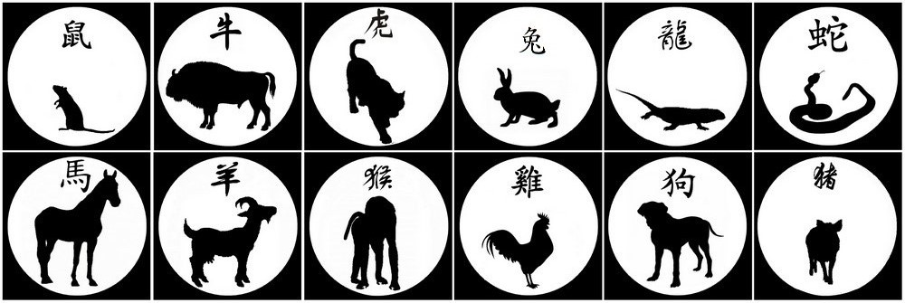

Signes chinois
Ils constituent un ensemble de douze animaux, ce sont, dans l'ordre : Souris ou Rat - Buffle ou Bœuf - Tigre - Lièvre, Lapin ou Chat - Dragon ou Lézard - Serpent - Cheval - Chèvre, Bouc ou Mouton - Singe - Coq ou Phénix - Chien - Cochon, Sanglier ou Eléphant. Dans certains pays les ayant adoptés, le chat remplace le lapin et l'ours remplace le porc, il en va ainsi aussi pour d'autres animaux. Ces signes sont associés dans le cycle sexagésimal chinois aux douze rameaux terrestres, qui en combinaison avec les dix tiges célestes constituent le système chinois de décompte du temps le plus anciennement attesté.
